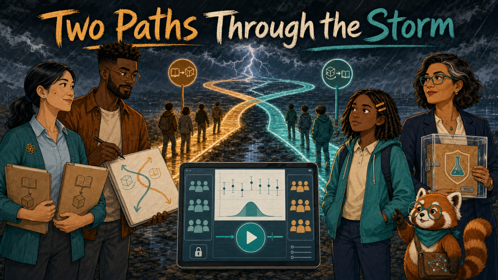
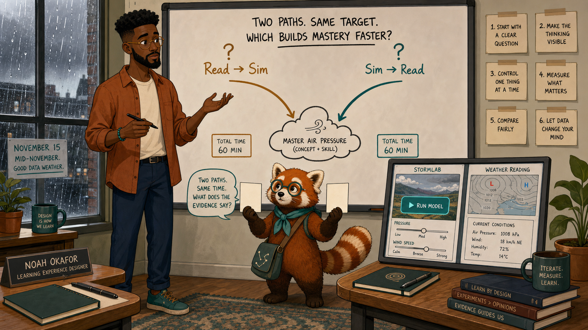
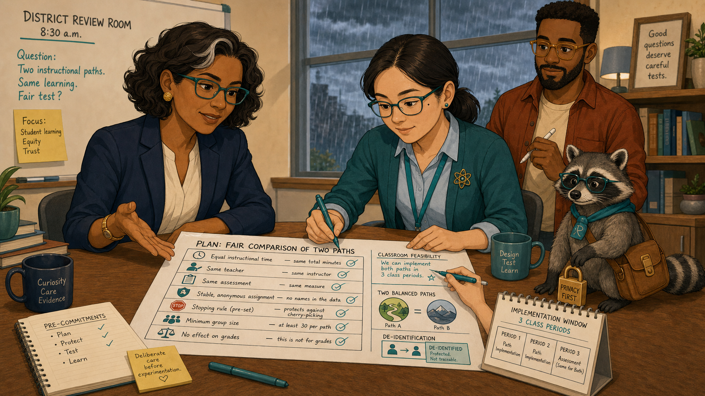
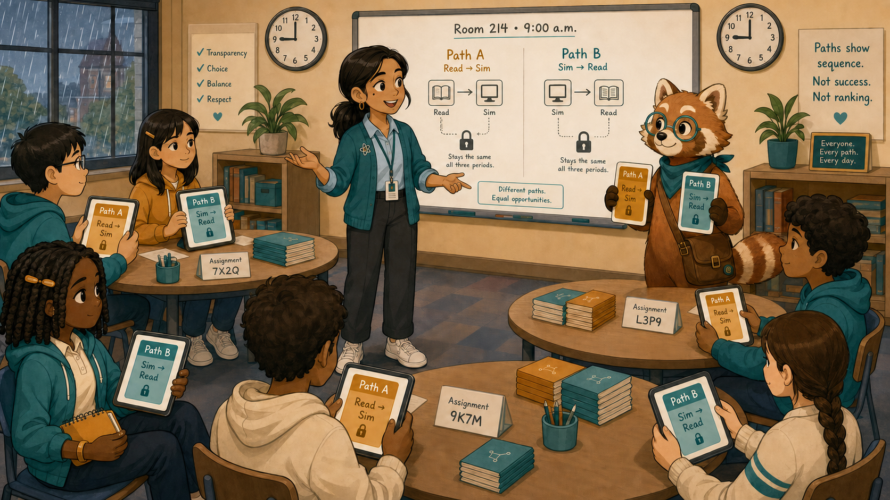
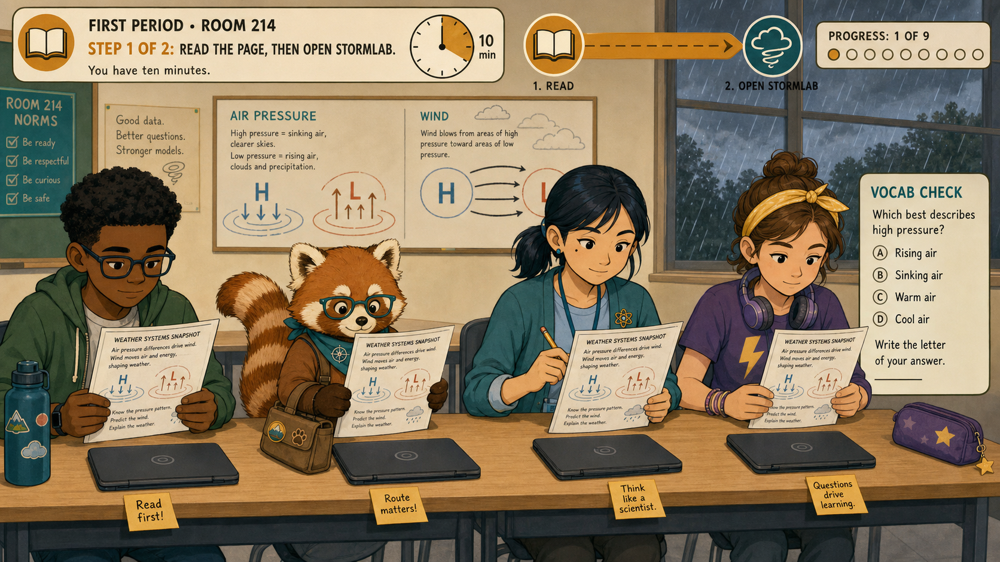
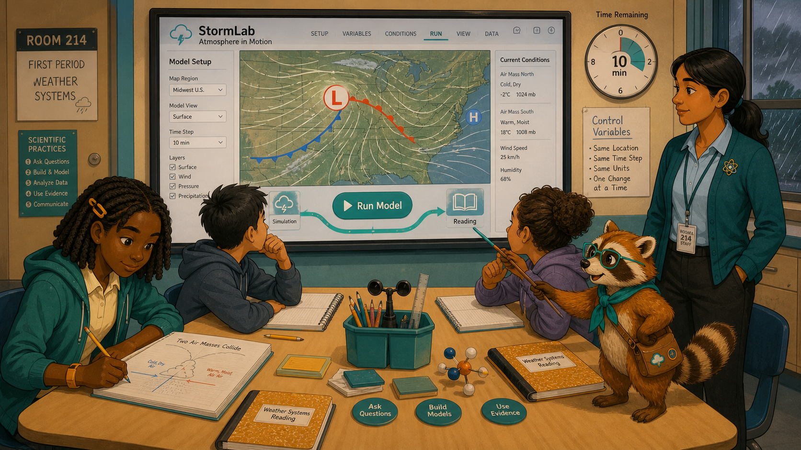
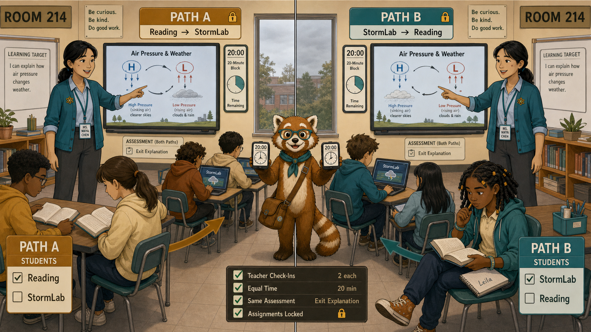
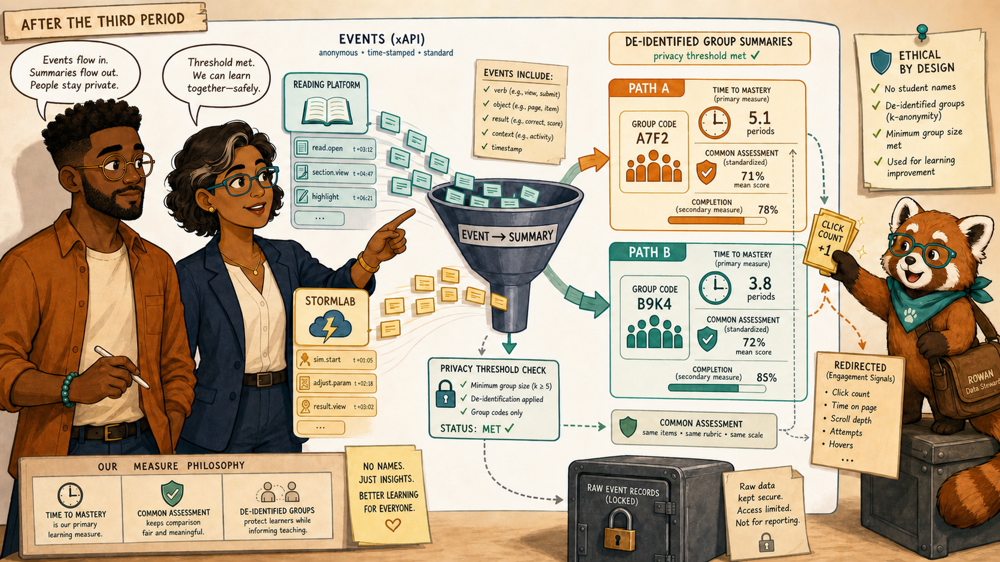
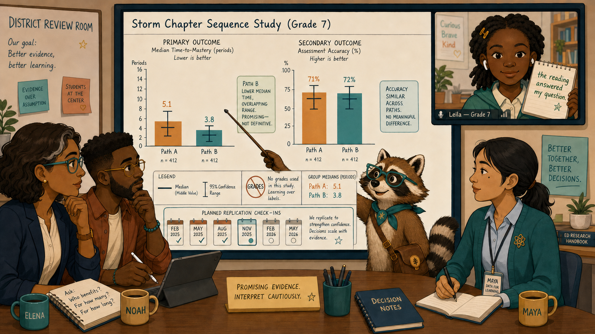
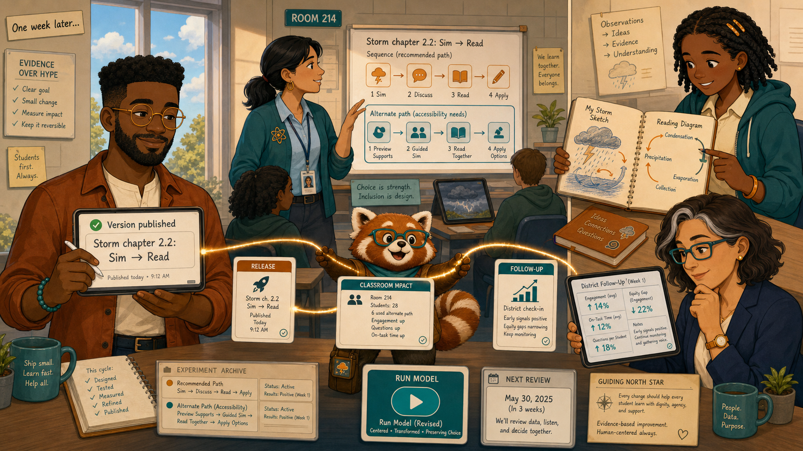

Two Paths Through the Storm¶

Cover Image Prompt
(This is the Cover Image. Do not include this label in the image.) Create a wide-landscape 16:9 graphic-novel cover in a warm contemporary educational-comic style with clean ink contours, softly painted color, subtle paper texture, realistic proportions, and no brands. Compose the scene around two luminous paths crossing a stylized storm: amber Path A reads “Read → Sim,” and teal Path B reads “Sim → Read.” In Room 214 in mid-November, show Leila Brooks, a 13-year-old Black American girl with rich dark-brown skin, heart-shaped face, large dark-brown eyes, shoulder-length center-parted two-strand twists held by two amber barrettes, teal hoodie over cream polo, navy trousers, cinnamon high-tops, amber left-wrist band, and amber notebook, standing on the teal path but looking across both. Show Ms. Maya Chen, a 35-year-old Chinese American woman with light warm-beige skin, left-eye beauty mark, blue-black low ponytail, teal rolled-sleeve cardigan, pale-blue shirt, charcoal trousers, white sneakers, amber atom pin, and teal lanyard, holding identical lesson folders for both groups. Show Noah Okafor, a tall lean 31-year-old Nigerian American man with deep umber-brown skin, flat-topped coils, close beard, round amber glasses, cinnamon overshirt, cream shirt, teal bracelet, and left-hand stylus, designing the two routes. Show Dr. Elena Ruiz, a 47-year-old Mexican American woman with warm medium-brown skin, rectangular teal glasses, wavy espresso bob with one right-temple silver streak, navy blazer, cream blouse, gold studs, and amber watch, holding an approved de-identified experiment plan. Rowan, the small rounded cinnamon-and-cream red panda with round teal glasses, teal neckerchief, ringed tail, and connected-dots satchel, traces both routes without favoring either. Include the revised StormLab interface with its centered teal Run Model control, rain-dark windows, balanced Path A and B group icons, a small lock for stable assignment, a median chart with uncertainty whiskers, and the exact title “Two Paths Through the Storm” in bold cream lettering. Palette: storm navy, slate blue, teal, amber, cinnamon, and cream. Tone: disciplined curiosity and fair testing, not competition between children. Generate the image immediately without asking clarifying questions.Narrative Prompt
This fictional nine-panel story follows “The Simulation Everyone Escaped” and reuses the revised StormLab MicroSim. Noah asks whether reading before simulation or simulation before reading leads to faster mastery. Elena approves only a low-risk, de-identified classroom experiment; Maya teaches both groups normally with the same total time and materials; assignment stays stable for each learner; Leila's account adds context but is not treated as proof. Use the canonical cast anchors, the warm educational-comic style, and an amber-versus-teal visual system that never implies one group of students is superior.Prologue – Two Good Ideas¶
Noah Okafor designs an interactive intelligent textbook and its MicroSims for seventh-grade science. Noah had two reasonable theories. Reading first might give students the language to interpret a storm model. Exploring first might give the later reading something concrete to explain. Choosing the fashionable sequence would be easy. Learning which sequence helped would require a fair comparison.
Panel 1: The Question on the Whiteboard¶

Image Prompt
(This is Panel 01. Do not include the panel number in the image.) Generate a wide-landscape 16:9 image in the warm contemporary educational-comic style, depicting panel 1 of 9 in Noah's design studio on a rainy mid-November morning. Show Noah Okafor, tall and lean with deep umber-brown skin, long oval face, broad nose, high forehead, dark-brown eyes behind round amber glasses, close boxed beard, neat flat-topped black coils with faded sides, open cinnamon overshirt, cream shirt, indigo trousers, teal shoes, teal right-wrist bracelet, and black stylus in his left hand. He draws two equal paths on a whiteboard: amber “Read → Sim” and teal “Sim → Read,” both ending at the same cloud-and-air-pressure mastery target. Rowan, the desk-high cinnamon-and-cream red panda with round teal glasses, teal neckerchief, ringed tail, and connected-dots satchel, stands between the arrows holding two equally sized blank evidence cards. Include the revised StormLab thumbnail with centered teal Run Model control, a weather reading thumbnail, equal time blocks, a question mark above both paths, rain streaking the studio window, six paper notes, and no winner symbol. Tone: open curiosity with genuine uncertainty. Generate the image immediately without asking clarifying questions.Rowan is the textbook's red-panda learning guide, helping people follow evidence without making decisions for them. Noah drew both routes and stopped before circling either one. “I can tell a story for both,” he told Rowan. The honest design question was not which story sounded better, but what evidence could distinguish them.
Panel 2: Rules Before Results¶

Image Prompt
(This is Panel 02. Do not include the panel number in the image.) Generate a wide-landscape 16:9 image in the same warm educational-comic style, depicting panel 2 of 9 in Elena's district review room at 8:30 a.m. Dr. Elena Ruiz appears with warm medium-brown skin, oval high-cheekboned face, dark-brown eyes behind thin rectangular teal glasses, wavy espresso bob with one narrow silver streak at her right temple, navy blazer, cream blouse, charcoal trousers, hammered-gold studs, and amber left-wrist watch. Ms. Maya Chen appears with light warm-beige skin, softly square face, left-eye beauty mark, low center-parted ponytail, rolled teal cardigan, pale-blue shirt, charcoal trousers, white sneakers, amber atom pin, and teal lanyard. They review a one-page plan showing equal instructional time, the same teacher, same assessment, stable anonymous assignment, a stopping rule, minimum group size, and no effect on grades. Noah appears on a tile with flat-topped coils, amber glasses, close beard, cinnamon overshirt, cream shirt, and left-hand stylus. Rowan stands desk-high with teal glasses, neckerchief, ringed tail, and satchel beside a privacy lock. Include Elena's open palm, Maya annotating the classroom-feasibility line, two balanced path icons, a calendar for three periods, a de-identification badge, and rain-dark windows. Tone: deliberate care before experimentation. Generate the image immediately without asking clarifying questions.Dr. Elena Ruiz is the district learning director, responsible for using de-identified evidence to improve learning across schools. Ms. Maya Chen teaches the participating seventh-grade science class. Elena required the rules before anyone saw a result. Both sequences would receive the same time, teacher, content, and assessment; no grade would depend on assignment; and small groups would not be reported. Maya checked that both paths fit ordinary instruction. Only then did the plan move forward.
Panel 3: One Learner, One Stable Path¶

Image Prompt
(This is Panel 03. Do not include the panel number in the image.) Generate a wide-landscape 16:9 image in the same warm educational-comic style, depicting panel 3 of 9 in Room 214 at 9:00 a.m. Leila Brooks appears with rich dark-brown skin, heart-shaped face, large dark-brown eyes, shoulder-length center-parted twists held by symmetrical amber barrettes, teal hoodie over cream polo, navy trousers, cinnamon high-tops, amber left-wrist band, and amber notebook. Her tablet shows a simple teal Path B card with “Sim → Read” and a small closed lock indicating the path stays stable across all three periods. Around her, balanced unnamed classmates receive either amber Path A or teal Path B cards; the colors mark sequence only, not success. Maya retains her low ponytail, left-eye beauty mark, rolled teal cardigan, pale-blue shirt, atom pin, charcoal trousers, white sneakers, and lanyard, explaining both paths from the center. Rowan, in cinnamon-and-cream fur, round teal glasses, teal neckerchief, ringed tail, and satchel, holds two equal route cards. Include equal stacks of materials, identical clocks, anonymous assignment codes, rain at the windows, no ranking, and no visible student names. Tone: transparency, fairness, and calm participation. Generate the image immediately without asking clarifying questions.Leila Brooks is a 13-year-old student in Maya's seventh-grade science class. The textbook assigned each learner one path and kept it stable. Leila received Path B: simulation first, then reading. Maya explained that neither color meant advanced or behind. It meant only that the class was helping compare two reasonable lesson orders.
Panel 4: Path A — Language Before Motion¶

Image Prompt
(This is Panel 04. Do not include the panel number in the image.) Generate a wide-landscape 16:9 image in the same warm educational-comic style, depicting panel 4 of 9 in Room 214 during the first period. Focus on four diverse unnamed Path A students with stable distinct accessories reading the same concise weather-science page before opening StormLab. An amber route ribbon runs from a reading icon to a simulation icon without implying failure. Maya Chen retains her light warm-beige skin, left-eye beauty mark, low blue-black ponytail, teal rolled-sleeve cardigan, pale-blue shirt, amber atom pin, charcoal trousers, white sneakers, and lanyard; she answers a vocabulary question at student eye level. Rowan, the desk-high cinnamon-and-cream red panda with teal glasses, teal neckerchief, ringed tail, and satchel, traces the amber route. Include identical ten-minute clocks, diagrams of air pressure and wind, closed tablets waiting for the second step, amber sticky notes, rain-dark windows, and a neutral progress marker. Tone: focused reading and legitimate preparation, not the “losing” condition. Generate the image immediately without asking clarifying questions.Path A met the vocabulary first: pressure gradient, wind direction, rainfall. Students annotated a diagram before opening the model. Some said the labels made the controls feel familiar; others were eager to see whether the page matched a moving storm.
Panel 5: Path B — Motion Before Language¶

Image Prompt
(This is Panel 05. Do not include the panel number in the image.) Generate a wide-landscape 16:9 image in the same warm educational-comic style, depicting panel 5 of 9 in Room 214 during the same first period. Leila retains her rich dark-brown skin, heart-shaped face, shoulder-length twists, two amber barrettes, teal hoodie over cream polo, navy trousers, cinnamon high-tops, amber left-wrist band, and amber notebook. She and three diverse unnamed Path B classmates use the revised fictional StormLab interface first; the large centered teal Run Model control is clearly visible, and curved wind lines move across the map. A teal route ribbon runs from simulation icon to reading icon without implying superiority. Maya retains her low ponytail, left-eye beauty mark, teal cardigan, pale-blue shirt, amber atom pin, charcoal trousers, and lanyard, observing without giving extra instruction. Rowan stands desk-high in teal glasses and neckerchief with cinnamon-and-cream fur, ringed tail, and satchel, tracing the teal route. Include identical ten-minute clock, Leila sketching two colliding air masses, the unopened matching reading, equal table materials, rain-dark windows, and no score. Tone: exploratory curiosity with controlled conditions. Generate the image immediately without asking clarifying questions.Path B began with motion. Leila changed the pressure difference and watched the wind lines tighten. In her notebook she wrote, “Bigger difference, faster wind?” The later reading would give that observation a formal name.
Panel 6: Keep Everything Else Steady¶

Image Prompt
(This is Panel 06. Do not include the panel number in the image.) Generate a wide-landscape 16:9 image in the same warm educational-comic style, depicting panel 6 of 9 as a balanced split-screen across the next two periods in Room 214. In both halves, Ms. Maya Chen has the exact same low ponytail, left-eye beauty mark, teal rolled-sleeve cardigan, pale-blue shirt, amber atom pin, charcoal trousers, white sneakers, and teal lanyard; she gives the same mini-lesson beside the same air-pressure diagram. The left half shows amber Path A students moving from reading to the revised StormLab; the right half shows teal Path B students moving from StormLab to the identical reading. Leila appears only on Path B with her exact twists, amber barrettes, teal hoodie, cream polo, navy trousers, cinnamon high-tops, wristband, and notebook. Rowan stands at the center seam in cinnamon-and-cream fur, teal glasses and neckerchief, ringed tail, and satchel, holding two identical clocks. Include equal twenty-minute blocks, same assessment card, same room, same number of teacher check-ins, stable assignment locks, rain changing to gray daylight, and no extra hints on either side. Tone: disciplined fairness and ordinary teaching. Generate the image immediately without asking clarifying questions.Maya resisted the urge to “help” one path more than the other. Both groups received the same explanation, practice time, and check for understanding. The only planned difference was order. Without that restraint, the final chart would compare bundles of changes instead of two sequences.
Panel 7: Measure Learning, Not Applause¶

Image Prompt
(This is Panel 07. Do not include the panel number in the image.) Generate a wide-landscape 16:9 image in the same warm educational-comic style, depicting panel 7 of 9 as an abstract but readable evidence-flow scene after the third period. Noah retains his deep umber-brown skin, flat-topped coils, close beard, round amber glasses, open cinnamon overshirt, cream shirt, indigo trousers, teal bracelet, and left-hand stylus. He watches anonymous xAPI-style event cards flow from reading and StormLab icons into two group summaries labeled Path A and Path B. Dr. Elena Ruiz appears beside him with warm medium-brown skin, rectangular teal glasses, wavy espresso bob with right-temple silver streak, navy blazer, cream blouse, gold studs, and amber watch, confirming the privacy threshold. Rowan, the desk-high cinnamon-and-cream red panda with teal glasses, neckerchief, ringed tail, and satchel, redirects shiny click-count cards away from the main measure. Include time-to-mastery clocks, common assessment shields, de-identified group codes, completion as a secondary measure, no student names, an event-to-summary funnel, and a locked raw-record vault. Tone: technical clarity and ethical restraint. Generate the image immediately without asking clarifying questions.The readout centered on time-to-mastery and performance on the shared assessment. Clicks and time on screen remained supporting evidence, not substitutes for learning. Individual paths stayed protected; only sufficiently large group summaries reached the district and design views.
Panel 8: A Result with Whiskers¶

Image Prompt
(This is Panel 08. Do not include the panel number in the image.) Generate a wide-landscape 16:9 image in the same warm educational-comic style, depicting panel 8 of 9 in Elena's district review room. Elena retains her medium-brown skin, teal rectangular glasses, wavy espresso bob with one right-temple silver streak, navy blazer, cream blouse, gold studs, and amber watch. Noah retains his deep umber-brown skin, flat-topped coils, close beard, round amber glasses, cinnamon overshirt, cream shirt, teal bracelet, and left-hand stylus. Maya retains her low ponytail, left-eye beauty mark, teal cardigan, pale-blue shirt, amber atom pin, charcoal trousers, and lanyard. Leila retains her rich dark-brown skin, twists, two amber barrettes, teal hoodie, cream polo, amber wristband, and notebook, appearing on a classroom video tile. The central chart shows Path B with a moderately lower median time-to-mastery than Path A, both with visible overlapping uncertainty whiskers; assessment accuracy is similar, and sample sizes are displayed equally. Rowan, in cinnamon-and-cream fur, teal glasses and neckerchief, ringed tail, and satchel, points to the whiskers rather than the lower bar. Include Leila's note “the reading answered my question,” a no-grades badge, group medians, confidence range legend, a replication calendar, and restrained expressions. Tone: promising evidence interpreted cautiously. Generate the image immediately without asking clarifying questions.Path B reached mastery sooner on median, while both groups finished with similar accuracy. The uncertainty ranges overlapped enough to demand humility. Leila's note— “the reading answered the question I already had”—helped explain a possible mechanism, but one student's experience did not become the experiment's conclusion.
Panel 9: Ship, Watch, and Stay Willing to Change¶

Image Prompt
(This is Panel 09. Do not include the panel number in the image.) Generate a wide-landscape 16:9 image in the same warm educational-comic style, depicting panel 9 of 9 as a hopeful composite scene one week later. Noah appears in his exact flat-topped coils, close beard, round amber glasses, cinnamon overshirt, cream shirt, indigo trousers, teal bracelet, and left-hand stylus, publishing a version card that reads “Storm chapter 2.2: Sim → Read,” with no brand. Maya appears in Room 214 with low ponytail, left-eye beauty mark, teal cardigan, pale-blue shirt, amber atom pin, charcoal trousers, and lanyard, teaching the sequence while retaining a clearly marked alternate path for accessibility needs. Leila appears with twists, two amber barrettes, teal hoodie, cream polo, navy trousers, cinnamon high-tops, amber wristband, and amber notebook, connecting her storm sketch to a reading diagram. Elena appears with teal rectangular glasses, wavy espresso bob and silver streak, navy blazer, cream blouse, gold studs, and amber watch, viewing a district follow-up chart. Rowan, the cinnamon-and-cream desk-high red panda with teal glasses and neckerchief, ringed tail, and satchel, connects release, classroom, and follow-up cards with a glowing thread. Include the revised centered teal Run Model control, an experiment archive, a next-review date, no trophy, clearing storm clouds outside, and both amber and teal paths preserved in the archive. Tone: evidence-based improvement that remains reversible. Generate the image immediately without asking clarifying questions.Noah made simulation-then-reading the default for the next release, while preserving an alternate route when a learner needed it. Elena documented why the change had been approved; Maya watched how it worked in ordinary teaching. The experiment ended, but the feedback loop stayed open.
Epilogue – What Made the Test Trustworthy?¶
The team formed the hypothesis before seeing results, changed one planned variable, kept assignments stable, protected students, and measured learning rather than mere activity. They also treated uncertainty as part of the finding. A defensible change was not a permanent truth; it was the best current decision with a scheduled check.
| Challenge | How the Team Responded | Lesson for Today |
|---|---|---|
| Two sequences both sounded plausible | Noah wrote a testable comparison | Competing good ideas are candidates for evidence |
| Classroom experiments can create unfair conditions | Elena and Maya fixed safeguards before launch | Ethics and feasibility belong in the design |
| Extra differences could confound the result | Maya held teacher, time, content, and assessment steady | Change one planned factor when possible |
| A lower median looked decisive | The team examined uncertainty and learner context | A chart needs interpretation, not applause |
Call to Action¶
When you want to improve a learning experience, state what you expect to change and what evidence would count against your idea. Fair tests do not remove judgment; they make the reasons for judgment visible.
“My experience can explain a result without being the whole result.”
—Leila Brooks, fictional student
“Rules before results.”
—Dr. Elena Ruiz, fictional district learning director
“A good experiment makes it easier to change your mind.”
—Noah Okafor, fictional designer
References¶
- Wikipedia: A/B testing - Overview of comparing two versions under controlled conditions
- Wikipedia: Randomized controlled trial - Background on randomized assignment and causal inference
- Wikipedia: Design of experiments - Introduction to planning controlled comparisons and limiting confounds
- What Works Clearinghouse: Procedures and Standards Handbook, Version 5.0 - U.S. education research standards for evaluating study evidence
- What Works Clearinghouse: Tips for Designing Studies - Practical guidance for trustworthy education intervention studies